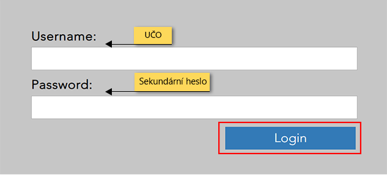
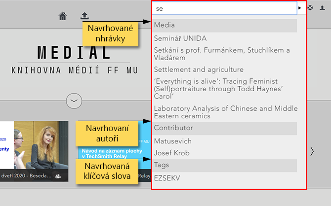
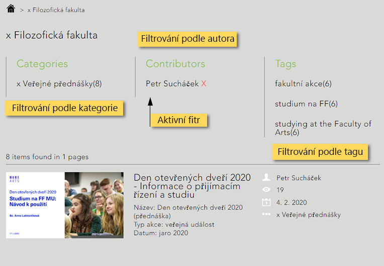

Základní orientace¶
Přihlášení do Medialu¶
Pro přihlášení klikněte na tlačítko “Sign in” v pravém horním rohu domovské stránky Medialu. Načte se Vám přihlašovací formulář – jako přihlašovací údaje použijte své UČO (kolonka “Username”) a sekundární heslo (kolonka “Password”). Přihlášení potvrdíte tlačítkem “Login”.

Po přihlášení budete moci do Medialu přidávat vlastní obsah. V závislosti na právech Vašeho účtu získáte také přístup k nahrávkám, které nejsou veřejně přístupné, jako např. k zaměstnaneckým videím svého pracoviště nebo videím ve své osobní kategorii.
Pozor! Přihlášení do Medialu je umožněno pouze zaměstnancům a studentům Filozofické fakulty a uživatelům spolupracujících pracovišť v rámci MU. Zaměstnanci a studenti jiných fakult a pracovišť MU mohou v případě zájmu o využívání systému kontaktovat správce systému.
Knihovna médií a Správa médií¶
Pracovní prostředí Medialu tvoří dva propojené systémy, mezi nimiž můžete při práci libovolně přecházet. V rámci každého z nich je možné provádět různé akce, oba jsou také vizuálně odlišeny.

Knihovna médií umožňuje procházet, vyhledávat a zobrazovat obsah uložený v Medialu. Je přístupná všem návštěvníkům webu včetně nepřihlášených hostů, ovšem až po přihlášení v ní naleznete i videa z neveřejných kategorií, ke kterým máte přístup.
Správa médií umožňuje obsah do Medialu přidávat a spravovat jej. Toto rozhraní je přístupné pouze přihlášeným uživatelům.
Z knihovny videí se do rozhraní pro správu dostanete pomocí volby “My Content” v rozbalovací nabídce My Account. Ze správy videí se zpět do knihovny dostanete přes tlačítko “Home” v navigační liště.
Navigace v knihovně médií¶
Po přihlášení do Medialu se ocitnete na domovské stránce knihovny médií. Naleznete zde základní prvky pro procházení obsahu knihovny.

-
Navigační lišta: obsahuje odkazy na některé klíčové stránky Medialu
- Domů: ikona domečku vede zpět na domovskou stránku knihovny médií
- Upload: otevře rozhraní pro přidávání obsahu
- Search: otevře pole pro vyhledávání
- Help: obsahuje základní nápovědu pro Medial
- My account: zobrazí nabídku ke správě uživatelského obsahu
-
Kategorie (Categories): nejsou primárně zobrazeny a je třeba rozkliknout šipku
-
Soupis videí: domovská stránka zobrazuje aktuálně dostupná videa; na hlavní stránce se zobrazují některé výběrové seznamy jako Naposledy přidané (Latest Added), Nejpřehrávanější (Most Played) a Náhodný výběr (Random)
-
Odkazy (Links): na konci domovské stránky se nachází sekce s užitečnými odkazy na jiné weby
Hledání nahrávek¶

Obr. 4 : Vyhledávací pole s aktivním našeptáváním
Pro vyhledání konkrétní nahrávky použijte vyhledávací pole v navigační liště. Zadaný text bude vyhledán v názvech a popiscích nahrávek, v klíčových slovech, názvech kapitol a také ve jménech autorů. Vyhledávání pracuje s funkcí našeptávání – již při zadávání dotazu Vám tedy Medial ukáže návrhy odpovídající Vašemu dotazu. Pro vyhledávání pomocí neúplných slov je třeba použít zástupný znak * (např. “středově*” dohledá výrazy “středověk”, “středověcí” apod.).
Filtrování obsahu¶

Filtrování Vám umožní zobrazit v seznamu videí pouze ta, která Vás zajímají. Obsah Medialu lze filtrovat podle tří položek: kategorií a podkategorií, autorů a tagů. Jednotlivé položky lze vzájemně kombinovat, v rámci každé z nich můžete ovšem nastavit jen jediný filtr. Můžete si tedy zobrazit například všechna videa nahraná konkrétním uživatelem v rámci určité podkategorie, nelze však už zobrazit obsah dvou podkategorií najednou.
Použitý filtr kategorie se zobrazí v horní části stránky. Seznam použitelných filtrů se přizpůsobuje tomu, které filtry již máte aktivované: pokud tedy zvolíte jako filtr určitou podkategorii, zobrazí se Vám v nabídce tagů pouze ty, které jsou v dané podkategorii užity.
Chcete-li některý aktivní filtr zrušit, stačí kliknout na ikonku červeného křížku u jeho názvu.
Časté dotazy (FAQ)¶
Je možné mít uživatelské rozhraní v češtině?
Čeština prozatím není mezi jazyky, které Medial podporuje, do budoucna však plánujeme uživatelské rozhraní do češtiny přeložit.